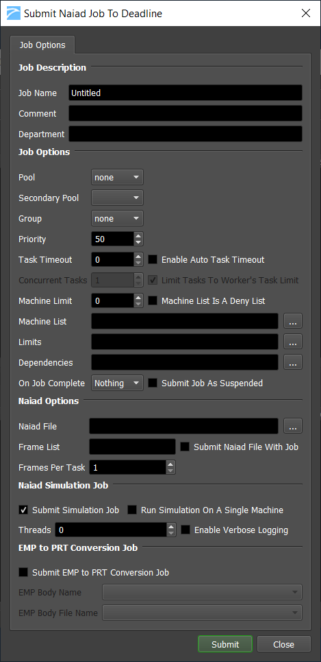
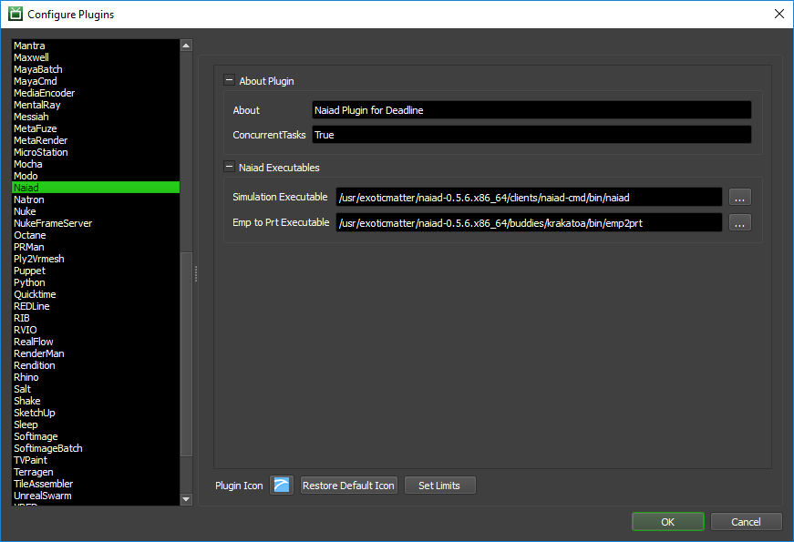

Naiad¶
Job Submission¶
You can submit jobs from the Monitor.
Submission Options¶
The general Deadline options are explained in the Job Submission documentation, and the Draft/Integration options are explained in the Draft and Integration documentation. The Naiad specific options are:
Naiad File: The Naiad file to simulate.
Naiad Simulation Job¶
Submit Simulation Job: Enable to submit a Simulation job to Deadline.
Run Simulation On A Single Machine: If enabled, the simulation job will be submitted as a single task consisting of all frames so that a single machine runs the entire simulation.
Threads: The number of render threads to use. Specify 0 to let Naiad determine the number of threads to use.
Enable Verbose Logging: Enables verbose logging during the simulation.
EMP to PRT Conversion Job¶
Submit an EMP to PRT Conversion Job: Enable to submit a PRT Conversion job to Deadline.
If you are also submitting a simulation job, this job will use the EMP files created by the simulation job.
If you are not submitting a simulation job, the EMP files must already exist.
EMP Body Name: The EMP body name.
EMP Body File Name: The path to the EMP files to be converted.
Plugin Configuration¶
You can configure the Naiad plugin settings from the Monitor. While in power user mode, select Tools -> Configure Plugins and select the Naiad plugin from the list on the left.
Note, if the executable supports a MAJOR.MINOR.REVISION (9.0.123) numbering system in its path, then you will need to configure the explicit exe path to the particular revision that you have installed on your machines. Deadline does not track every possible revision available or indeed where it might be custom installed to, so a studio should verify their exe paths are correct for each application version they choose to use with Deadline. Multiple exe paths can still be declared and the first one that is found on a particular Worker on a particular platform will be used from the exe list.
Naiad Executables
Simulation Executable: The path to the command line client executable file used for simulation. Enter alternative paths on separate lines.
Emp to Prt Executable: The path to the emp2prt executable file used for emp conversion. Enter alternative paths on separate lines.
FAQ¶
Currently, there are no FAQs for this plugin.
Error Messages and Meanings¶
This is a collection of known Naiad error messages and their meanings, as well as possible solutions. We want to keep this list as up to date as possible, so if you run into an error message that isn’t listed here, please visit the Thinkbox Help Centre and let us know.
Currently, no error messages have been reported for this plugin.

{kind=link}
{kind=link}